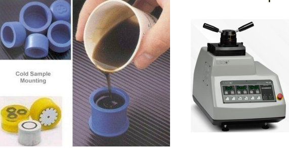

- Step 2: Mounting of sample
-
Mounting:
- There are three types of cold mounting. Epoxy systems, Acrylic systems and Polyester systems.
- Cold mounting compounds are preferred for specimens that are sensitive to the heat or pressure.
- Hot mounting may be unsuitable for delicate, soft or low melting point specimens.
- In the case of very soft or thermally sensitive materials, hot mounting is not appropriate.

Cold Mounting
Hot Mounting